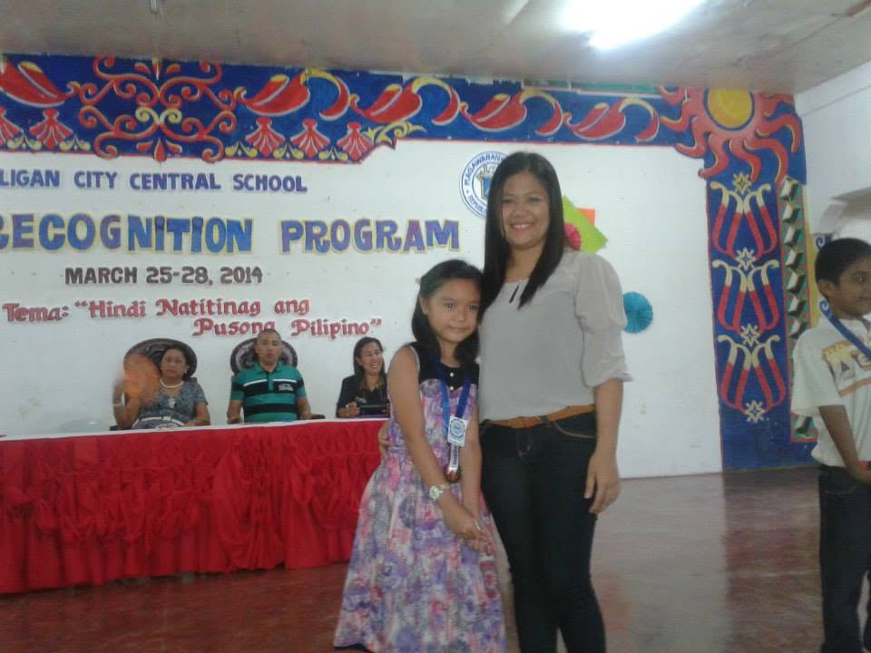
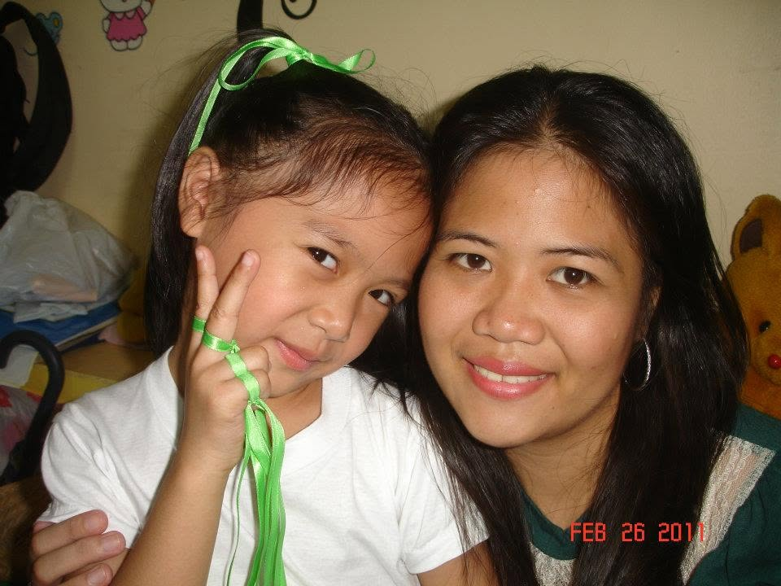
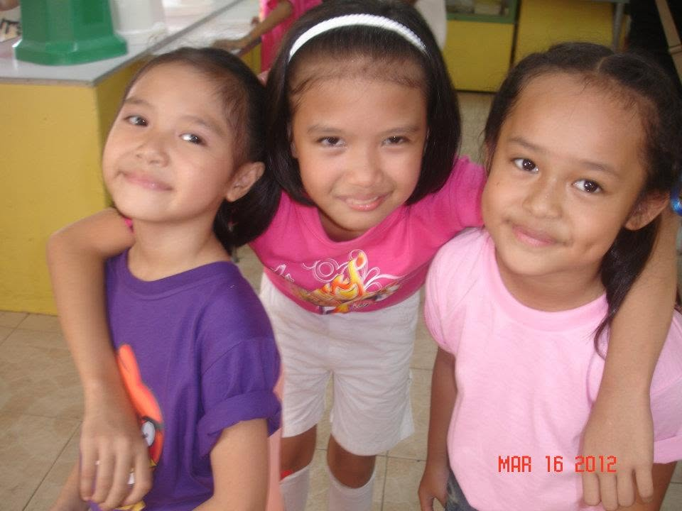
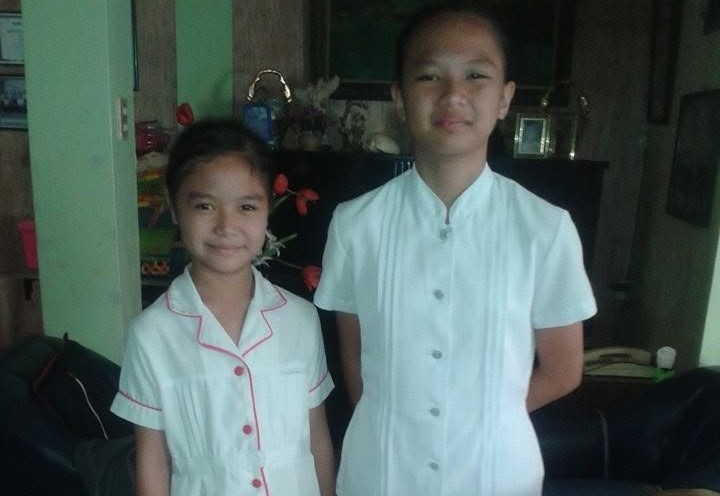

CHAPTER 01
A little look back at my grade school years.

MY GRADE SCHOOL YEARS
This was where my educational journey began. I spent these years learning the basics, making friends, discovering new interests, and creating memories that I still remember today.
🏫 School: Iligan City Central School
📍 Location: Iligan City
📅 Years: 2009 – 2016
Grade school me was tiny and timid. My classmates used to tease me a lot, and I would always end up crying. Thankfully, my teachers loved me, so my classmates would usually get scolded whenever they made me cry. Despite being a sickly kid who was often absent, I loved going to school so much that I would even cry whenever I couldn't attend. Looking back, it's funny to think about how much I loved school despite how often I had to miss it.

little memories ♡

good old days ✿

where it began